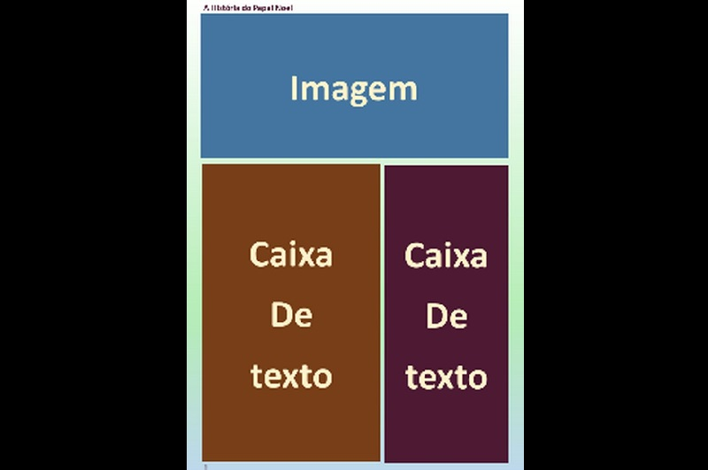
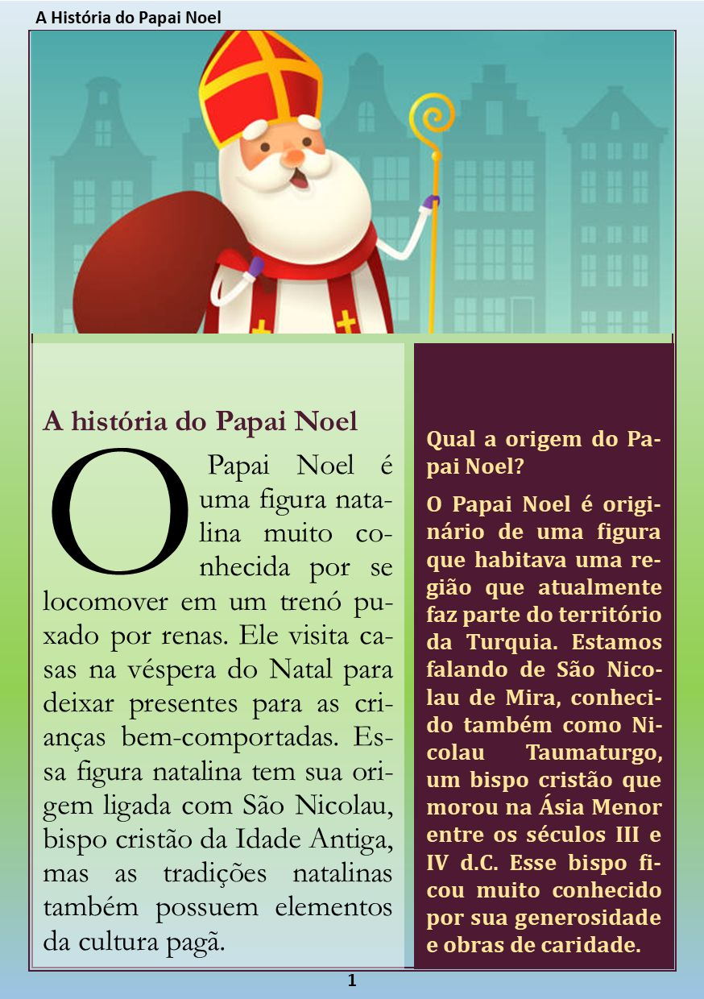
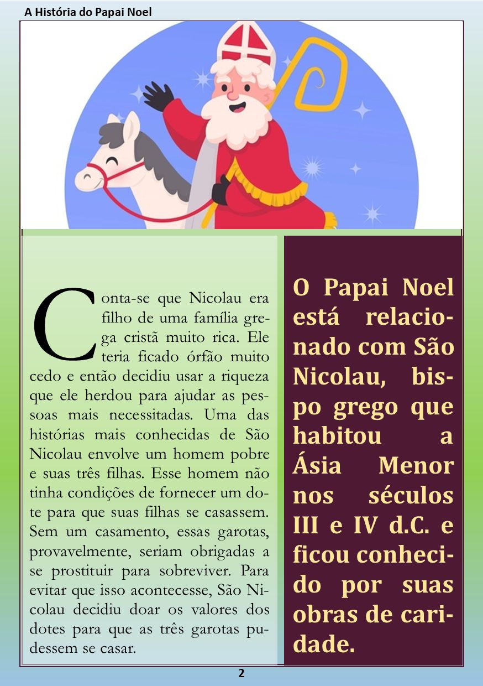
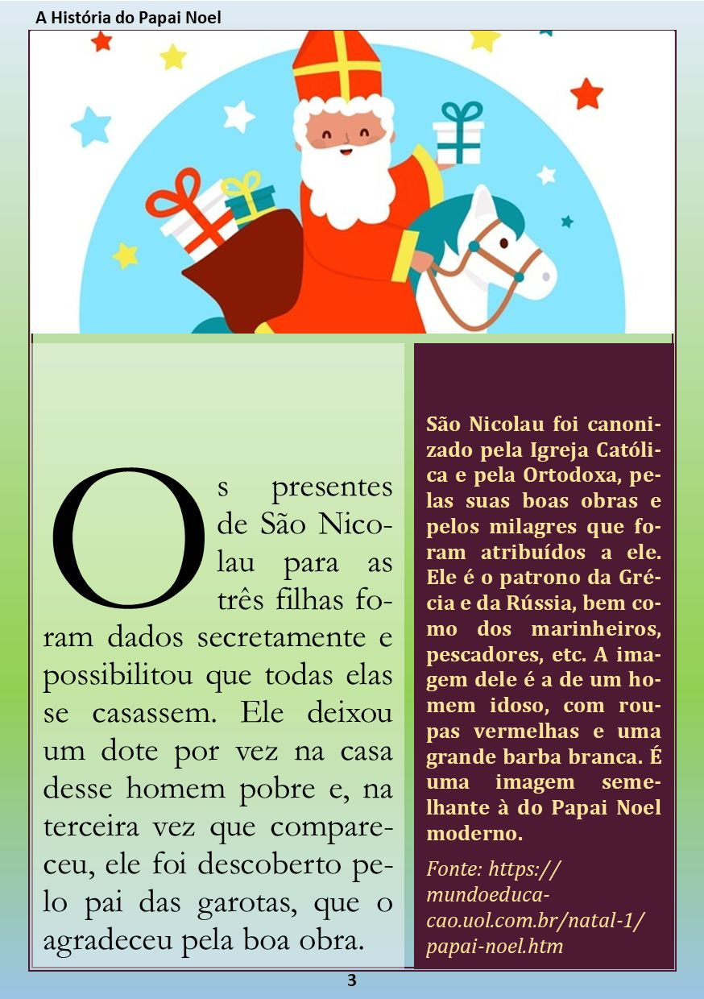

O Microsoft Publisher é um aplicativo da suíte Office que fornece recursos para criar designs de layout para impressão como cartões de visita, convites, certificados, revistas entre outros.
Como exercício para aprender o Publisher, vamos desenvolver nossa própria revista, com uma matéria apenas, é claro, mas com todo o conceito que uma revista pode ter e com os recursos principais do Publisher.
O Publisher é uma aplicação basicamente simples e muito semelhante às outras da suite do Office que já estudamos. Para não ficar repetindo conceitos, vamos aprender os pontos principais executando um exercício simples.
1. Abra o Publisher.
2. Clique em Novo e escolha “Mais Tamanhos de Página”.
3. Dê um duplo-clique em “A5 (Retrato)”.
4. Pronto, agora já temos nosso arquivo configurado e pronto para ser desenvolvido.
1. Clique no menu Design de Página.
2. Clique na opção Margens e escolha Estreita.
3. É possível alterar outros elementos de página, no entanto, alteraremos na Página Mestra, e você entenderá porquê.
As páginas-mestre servem para criar um ou mais layout padrão que serão aplicados à todas as páginas ou a páginas diferentes. Por exemplo, podemos criar um layout para capas de capítulos, e outro para o conteúdo, ou criar um layout paras as páginas à direita e outro para as páginas à esquerda.
1. Ainda no menu Design de Página, clique em Páginas Mestras e escolha Editar Páginas Mestras.
2. Clique em Mostrar Cabeçalho e Rodapé.
3. No cabeçalho, escreva: “A História do Papai Noel”.
4. No Rodapé, clique em Inserir Número de Página.
Você pode alternar entre Cabeçalho e Rodapé clicando em “Mostrar Cabeçalho e Rodapé”.
Clique no menu Página Inicial e configure, tanto o cabeçalho como o número de página como Calibri 11 negrito, escolha uma cor de fonte roxo escuro para ambos. Formate o número de página como Centralizado.
Enquanto estivermos editando a Página-Mestra o número de página é representado por uma cerquilha (#).
1. Retorne ao menu Design de Página, vamos agora alterar o fundo.
2. Clique em Plano de Fundo e escolha Mais Planos de Fundo. Escolha Preenchimento de Gradiente.
3. Crie uma gradação que comece no branco, passe pelo verde-claro e termine no azul-claro.
4. Verifique se o ângulo está configurado como 90° e clique em Ok.
5. A última etapa de configuração de nossa página-mestra é desenhar uma borda personalizada, para tal utilizaremos um retângulo.
6. Clique em → Inserir → Formas → Retângulo.
7. Desenhe um retângulo utilizando as interseções da margem interna da página.
8. Clique no menu Forma e, em “Preenchimento da Forma”, selecione “Sem Preenchimento”.
9. Em “Contorno da Forma” escolha → Traços → Mais Linhas.
10. Em “Tipo de Composição” escolha a opção 3pt com duas linhas finas.
11. Em Cor, escolha uma cor roxo-escuro.
12. Clique em Ok.
13. Clique no menu Página Mestra e selecione Fechar Página Mestra. Com isso voltamos a editar as páginas independentes.
As guias servem para alinhar e organizar facilmente elementos gráficos como imagens e caixas de texto numa página, além de garantir precisão no dimensionamento desses objetos.
Clique em → Design de Página → Guias → Guias de Régua.
1. Na caixa de texto, digite 7 e clique em “Definir”, a régua será inserida na lista.
2. Digite 7,2 e clique em “Definir”. Agora temos duas réguas horizontais, vamos inserir as verticais.
3. Clique na guia Vertical.
4. Digite 8,5 e clique em “Definir”.
5. Digite 8,7 e clique em “Definir”.
6. Se inserir uma guia sem querer você pode removê-la.
7. Clique em Ok.
8. Você já pode verificar as guias que inserimos que agora dividem a página em quatro partes, as duas partes superiores serão utilizadas para inserir uma única imagem, as duas de baixo receberão caixas de texto.
9. Note na imagem acima como deverá ser o layout de nossa página para inserirmos os elementos.
1. Clique no menu “Inserir” e selecione “Desenhar Caixa de Texto”.
2. Utilize a interseção entre as guias de dentro para desenhar uma caixa de texto na parte inferior esquerda. Repita o mesmo para a parte inferior direita.
Para selecionar uma caixa de texto criada devemos clicar em sua borda. Para sair de uma caixa de texto devemos clicar do lado de fora.
1. Selecione a caixa de texto da esquerda e clique no menu Forma.
2. Selecione Preenchimento da Forma → Mais Cores de Preenchimento.
3. Defina a cor como branca e a transparência como 50%. Clique em Ok.
4. Repita o mesmo para a guia da direita, mas defina a cor como roxo escuro e a transparência como 0.
Por último, antes de começarmos a inserir o texto, vamos reservar um espaço para imagem que ocupe a parte superior inteira da página.
1. Clique em → Inserir → Espaço Reservado para Imagem.
2. Utilize as guias internas da parte de cima para desenhar uma caixa.
3. Note que apenas aparece um ícone no meio do espaço, ele será utilizado para inserir uma imagem em cada página quando finalizarmos o layout.
Para inserir nossos textos devemos definir as margens e o alinhamento das caixas de texto, em seguida inserir a quantidade de páginas necessárias já configuradas. Para tal, faça o seguinte:
1. Clique dentro da caixa de texto da esquerda.
2. Clique no menu Caixa de Texto.
3. Em “Alinhamento” → Escolha o alinhamento na “Parte Inferior Esquerda”. Em “Margens” escolha “Larga”.
4. Faça o mesmo com a caixa de texto da direita, mas escolha o alinhamento na Parte Inferior Direita.
5. Clique com o botão direito sobre a Página 1 na Barra de Páginas, do lado esquerdo do espaço de trabalho. E selecione: Inserir Página.
6. Em Número de Páginas Novas digite 2, e marque a opção “Duplicar todos os objetos na página 1”. Essa opção fará com que todas as páginas criadas contenham os mesmos elementos gráficos que configuramos.
7. Clique em Ok.
8. Selecione a página 1.
Vamos agora inserir o texto. Na caixa de texto da esquerda na página 1, digite este texto:
**i
A história do Papai Noel
O Papai Noel é uma figura natalina muito conhecida por se locomover em um trenó puxado por renas. Ele visita casas na véspera do Natal para deixar presentes para as crianças bem-comportadas. Essa figura natalina tem sua origem ligada com São Nicolau, bispo cristão da Idade Antiga, mas as tradições natalinas também possuem elementos da cultura pagã.
i**
1. Clique no menu Página Inicial.
2. Selecione o título e formate-o conforme abaixo:
3. Fonte Garamond, Negrito, Tamanho 18, Alinhamento Justificado, Cor Roxo.
4. Selecione o restante do texto e formate-o conforme abaixo:
5. Fonte Garamond, Normal, Tamanho 18, Alinhamento Justificado, Cor Preto.
Na caixa de texto da direita na página 1, digite este texto:
**i
Qual a origem do Papai Noel?
O Papai Noel é originário de uma figura que habitava uma região que atualmente faz parte do território da Turquia. Estamos falando de São Nicolau de Mira, conhecido também como Nicolau Taumaturgo, um bispo cristão que morou na Ásia Menor entre os séculos III e IV d.C. Esse bispo ficou muito conhecido por sua generosidade e obras de caridade.
i**
1. Selecione todo o texto e formate-o conforme abaixo:
2. Fonte Cambria, Negrito, Tamanho 14, Alinhamento Justificado, Cor Amarelo Claro.
3. Finalizada a Página 1! Salve seu arquivo.
Você pode selecionar todo o texto num documento ou num elemento de texto em diversos aplicativos usando o atalho Ctrl+T.
Na caixa de texto da esquerda na página 2, digite este texto:
**i
Conta-se que Nicolau era filho de uma família grega cristã muito rica. Ele teria ficado órfão muito cedo e então decidiu usar a riqueza que ele herdou para ajudar as pessoas mais necessitadas. Uma das histórias mais conhecidas de São Nicolau envolve um homem pobre e suas três filhas. Esse homem não tinha condições de fornecer um dote para que suas filhas se casassem. Sem um casamento, essas garotas, provavelmente, seriam obrigadas a se prostituir para sobreviver. Para evitar que isso acontecesse, São Nicolau decidiu doar os valores dos dotes para que as três garotas pudessem se casar.
i**
1. Selecione todo o texto e formate-o conforme abaixo:
2. Fonte Garamond, Normal, Tamanho 15, Alinhamento Justificado, Cor Preto.
Na caixa de texto da direita na página 2, digite este texto:
**i
O Papai Noel está relacionado com São Nicolau, bispo grego que habitou a Ásia Menor nos séculos III e IV d.C. e ficou conhecido por suas obras de caridade.
i**
1. Selecione todo o texto e formate-o conforme abaixo:
2. Fonte Cambria, Negrito, Tamanho 22, Alinhamento Justificado, Cor Amarelo Claro.
3. Salve o arquivo.
Na caixa de texto da esquerda na página 3, digite este texto:
**i
Os presentes de São Nicolau para as três filhas foram dados secretamente e possibilitou que todas elas se casassem. Ele deixou um dote por vez na casa desse homem pobre e, na terceira vez que compareceu, ele foi descoberto pelo pai das garotas, que o agradeceu pela boa obra.
i**
1. Selecione todo o texto e formate-o conforme abaixo:
2. Fonte Garamond, Normal, Tamanho 20, Alinhamento Justificado, Cor Preto.
Na caixa de texto da direita na página 3, digite este texto:
**i
São Nicolau foi canonizado pela Igreja Católica e pela Ortodoxa, pelas suas boas obras e pelos milagres que foram atribuídos a ele. Ele é o patrono da Grécia e da Rússia, bem como dos marinheiros, pescadores, etc. A imagem dele é a de um homem idoso, com roupas vermelhas e uma grande barba branca. É uma imagem semelhante à do Papai Noel moderno.
Fonte: https://mundoeducacao.uol.com.br/natal-1/papai-noel.htm
i**
1. Selecione todo o texto e formate-o conforme abaixo:
2. Fonte Cambria, Negrito, Tamanho 13, Alinhamento Justificado, Cor Amarelo Claro.
3. Aplique um estilo Itálico ao texto com o link da fonte.
4. Salve o arquivo
Vamos agora inserir as imagens no topo de cada página e também as letras capitulares, que são as iniciais grandes nos parágrafos. Para inserir as capitulares faça o seguinte:
1. Na página 1, clique sobre a letra O no começo do parágrafo.
2. Clique no menu Caixa de Texto, selecione Letra Capitular e escolha a segunda opção.
3. Faça o mesmo com as páginas 2 e 3.
4. Note que apenas as caixas de texto da esquerda possuem letra capitular.
1. Para inserir as imagens no topo das páginas, primeiro entre em alguns bancos de imagens gratuitos e baixe três imagens de sua preferência relacionadas com Natal, Papai Noel ou São Nicolau de Mira, e salve-as em sua pasta.
2. Em seguida basta clicar no ícone de imagem em cada página e procurar pela imagem em sua pasta e inserir.
3. E finalizamos nossa revista! Vamos agora exportar também como .pdf para sua pasta.
4. Salve o arquivo.
1. Para exportar o documento, clique em → Arquivo → Exportar → Criar PDF/XPS.
2. Na janela que se abriu, clique em → Opções → Opções de Impressão.
3. Em Tamanho, selecione A5.
4. Clique em Ok. Clique em Ok novamente.
5. Procure sua pasta e clique em Publicar.
6. Está finalizado nosso exercício! Verifique nas páginas seguintes o resultado e compare com o que você criou.
O Microsoft Publisher e o Powerpoint possuem muito mais recursos especiais que são utilizados no Design Gráfico, no entanto, como este curso não é focado em Design Gráfico, passamos apenas por seus recursos mais essenciais para que você possa iniciar seu aprendizado nestes dois softwares.
  Caso queira se aprofundar e conhecer um pouco mais sobre as ferramentas de criação destes aplicativos sugiro que faça o Curso Completo de Design Gráfico em www.jorgesouza.com.br/aprendizado.